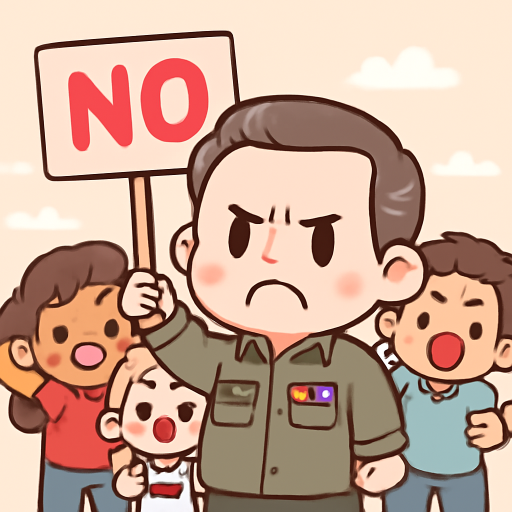

其一 · 以色列南部 · 以色列空襲致十三人死亡
以色列空襲南黎巴嫩，造成十三人喪生。
在以色列南部，最近的空襲導致13人喪生，其中包括四名女性和一名小孩。這場衝突再次揭示了以色列與伊朗支持的真主黨之間緊張的局勢。這不僅影響當地民眾的生活，也讓國際社會對中東局勢的穩定性感到擔憂。希望這場衝突能早日和平解決，不然大家真的要考慮一起開個和平會議了。
🔗 原始新聞 ↗
2026-05-03 · 以古觀今，以笑抗愁
以色列空襲南黎巴嫩，造成十三人喪生。
在以色列南部，最近的空襲導致13人喪生，其中包括四名女性和一名小孩。這場衝突再次揭示了以色列與伊朗支持的真主黨之間緊張的局勢。這不僅影響當地民眾的生活，也讓國際社會對中東局勢的穩定性感到擔憂。希望這場衝突能早日和平解決，不然大家真的要考慮一起開個和平會議了。
🔗 原始新聞 ↗
美國宣布將撤回德國5000名軍隊，影響深遠。
美國總統特朗普宣布計劃撤回5000名駐德軍隊，這一決定引發了德國和北約的廣泛關注。雖然撤回後仍有大量美軍留駐，但這一變化可能影響歐洲的軍事布局。對於德國來說，這就像是擔心自己家裡的狗突然不見了，雖然狗還在，但心裡總是空落落的。
🔗 原始新聞 ↗
古巴對新一波美國制裁表示譴責，認為不合理。

古巴政府對美國最新的制裁措施表達了強烈不滿，稱這些措施不僅不合法，還對民眾的生活造成了嚴重影響。隨著古巴的經濟困境加劇，這些制裁無疑為目前的局勢火上加油。古巴人可能在想，這麼多制裁下來，還有沒有一條路可以走呢？
🔗 原始新聞 ↗
美國最高法院再度面臨墮胎藥的法律爭議。
美國最高法院受到壓力，要求恢復郵寄墮胎藥的使用權。隨著法律的爭議不斷升級，這一議題對於不少女性來說至關重要。這不僅是法律問題，更是關乎每個女性的選擇權。希望能夠有個明確的結果，讓大家能夠安心做出正確的選擇。
🔗 原始新聞 ↗
墨西哥州長因涉嫌貪污辭職，國內醜聞不斷。
墨西哥州長魯本·羅查·莫雅因涉嫌保護毒販而辭職，這一事件引發了全國的廣泛關注。隨著毒品問題日益嚴重，這起醜聞讓人對墨西哥政府的透明度和問責制產生疑慮。看來，在這樣的情況下，總是有些人比其他人更容易“掉進糞坑”了。
🔗 原始新聞 ↗